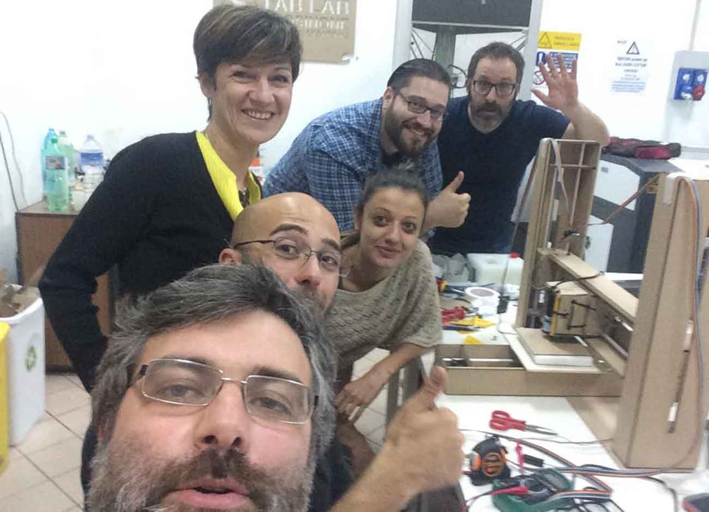
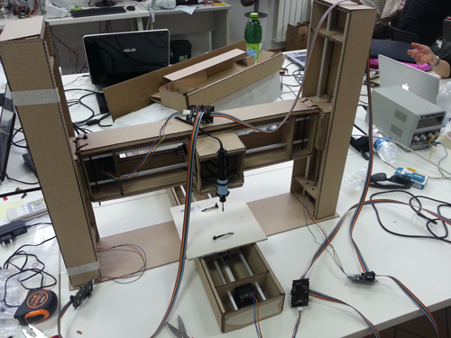
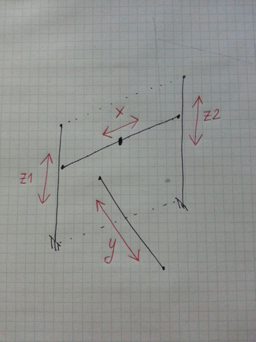
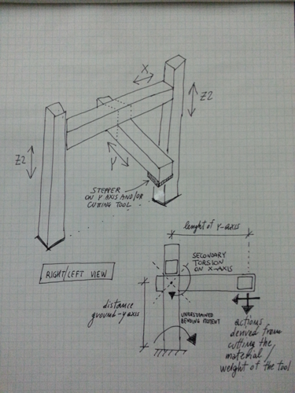
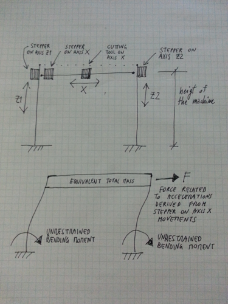
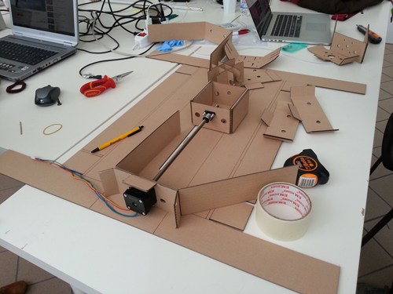
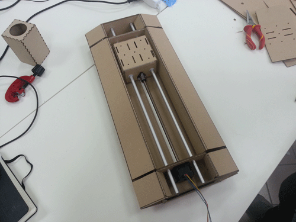
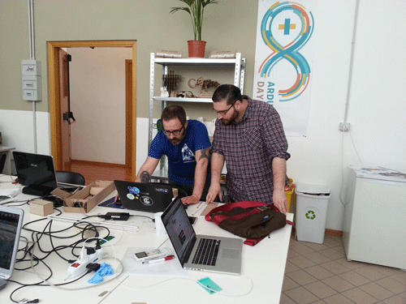
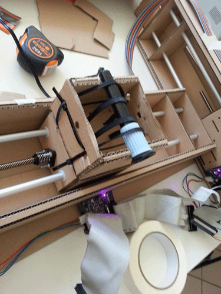
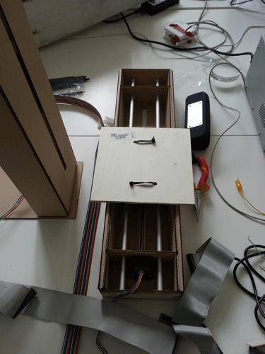

Mechanical design, machine design
.
The weekly assignment focuses on the machine design: construction, understanding of mechanical design and machine design, troubleshooting steps and tips for improvement. I've participate in a work group, and I'm here now to document my contribution.
THE GROUP. The group is composed of six people, and as well as all the work group we experienced some problems and troubleshooting at the beginning. After an slow start we choose our rules, according to our skills and then everything went in the right way: we're probably one of the first group who finished the assignment. Please go directly to the final video if you'd like to know us: Antonio Burrai (me), Leonardo Zaccone, Massimiliano Di Bitonto, Elena Papetti, Marco Sanalitro, Michela Ruggiero. 
MY EXPERIENCE. The kickstart is always very difficult when you work with a lot of people with different skills and different amount of time disposable. Some of them were not present every day at the Lab (me too), so we need to perform under severe pressure in order not to slow down to others.
According to our skills, the following task/people assigned: (1)Programming/Graphical interface: Massimiliano Di Bitonto/Leonardo Zaccone (2)Codification of coordinates (Grasshopper for Rhinoceros)/General coordination: Marco Sanalitro (3) 3D Modeling : Antonio Burrai/Michela Ruggiero (4) Documentation/summary of activities: Elena Papetti. Please note that this is just a general division. In reality everything work together performing different tasks. I.e. I've 3D modeled, built the model, tested it, performed clash detection between elements, analized the dinamic behaviour (see in the following) and so on. As it can be inferred from http://fabacademy.org/archives/2015/eu/labs/frosinone/mechanical.html (the description of our group work), we've worked in different rules. It has been a great experience, considering that we've never worked together. I've learned lot of things: the basics of machine control, how to design it, how it works and so on. The most I like in this assignment has been the idea behind the exam: starting from a generic module, with a basic mechanics, can we assemble lots of different machines ? The answer is YES. I'm going to use the skills learned to other projects in FabLab Olbia.

This is a (in progress) picture of the machine we developed during the 16th assignment: the “polymachine”. Starting from the end, I’m gonna give an explication of our mechanical and structural reasoning.

INTRODUCTION. The machine is based on a modular component (three of them have been used), that is a mainly a cardboard box, a stepper with integrated lead screws, anodized aluminium rods as guide shafts, and nylon bushings. For further details please refer to http://mtm.cba.mit.edu/machines/science/. The idea behind the modulus is to use it, coupled with other modulus, in order to create machines.
More specifically: “a machine that make”.

THE STRUCTURE: A GANTRY CRANE The scheme have been chosen in order to realize a very stable structure. As it can be inferred from the following picture, that scheme is well known as used all over the world: the gantry crane. Of course, with reference to the DOFs (Degrees Of Freedom), they are not so similar. Let me know summarize what is commonly intended for DOFs.

DOFs: SYSTEM DYNAMIC MOVEMENT The number of independent ways by which a dynamic system can move, without violating any constraint imposed on it, is called number of degrees of freedom. In other words, the number of degrees of freedom can be defined as the minimum number of independent coordinates that can specify the position of the system completely.
Please remember that any point in the space can generally be defined by mean of three position movements and the three angle movements (6DOFs).

The following DOFs can be defined for our machine.Please note that:
(a) Z1 is coincident with Z2, z-DOF
(b) the cutting tool is fixed at the x-DOF
(c) the object to be cut is fixed at the y-DOF

WHY THIS DESIGN? IS THIS A LOW-ENERGY MACHINE? From the beginning I looked for a low-energy machine. Low-energy means that ideally (i.e.):
(a) I do not want to use too many steppers (and energy)
(b) I do not want the machine to assume stress (in terms of mechanical work) consuming position
(c) I do not want a unstable global equilibrium
What assumption and then practical measure have been taken in order to make real the above mentioned physical assumption?
(d) The majority of DOFs are uncoupled, it means that i.e. a very few modules have been mounted on the top of another module. The y-DOF is placed on the ground, even if it’s globally fixed to the machine.
Note also that no DOF is suspended on another DOF. I.e. the following position (and its related problems) has been avoided.
(d) The stepper on z-DOF have been placed on the bottom part of the modulus (close to the ground). So the machine itself does not need to support the entire weight of both motors.
A non-trivial consequence of the mentioned motor placement is strictly related to the Newton's Second Law (http://hyperphysics.phy-astr.gsu.edu/hbase/newt.html).
Please refer to the following section for an in-depth analysis.

THE NEWTON’S LAW EFFECTS SCENARIO: If the stepper on z-DOF would have been placed on the top part of the modulus (far from ground). Note that, in case of motors positioned in the top of the Zi modules, there are very dangerous configurations for the machine when the x-axis approach the top of x-axis. In this case almost the 90% of the global mass is concentrated on the top of the system.

Thus acceleration related to the x-axis stepper movement immediately excite the mass resulting in very huge forces and bending moments (unrestrained, thus causing the collapse of the system). Vice versa, the base position determined a very stable configuration.
THE MACHINE: Apart of the previous considerations, the following 3d complete model has been designed, including all the information required to cut the part using the laser cutter.

The single machine

The exploded machine (parts for each module and scheme for the laser cutter)

Scheme for the laser cutter (detail)
Some pictures summarizing the machine construction are now presented.

Construction in progress

The first module

Me and Arch. Marco Sanalitro talking about the motor dynamic

The y-axis

The tool placement

All the staff at work !!!
Last but not least a funny presentation video of our activities. !!!
A funny staff presentation during the assignment of machine design @ Fab Academy 2015 from antonio burrai on Vimeo.
Download area
The following files are downloadable:
| Type of file |
Description |
Link (Type of file) |
| Fabrication files: vectors(s) / 3D model(s) |
Complete machine (all the modules) - Rhinoceros file |
(3DM) |
| Fabrication files: vectors(s) / 3D model(s) |
Machine (single modules) - Rhinoceros file |
(3DM) |